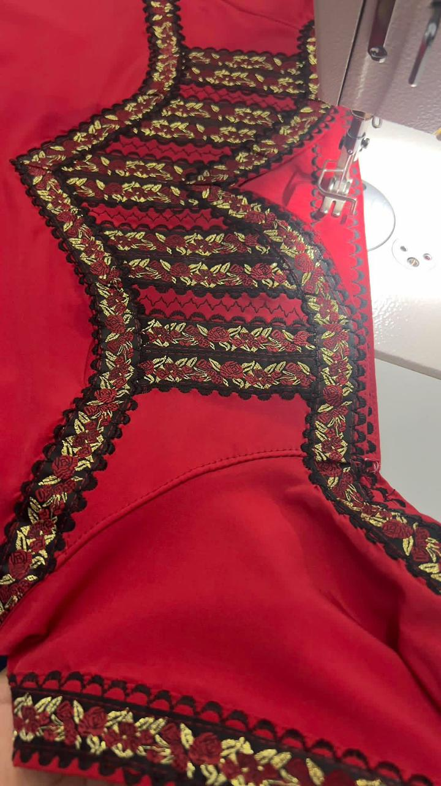
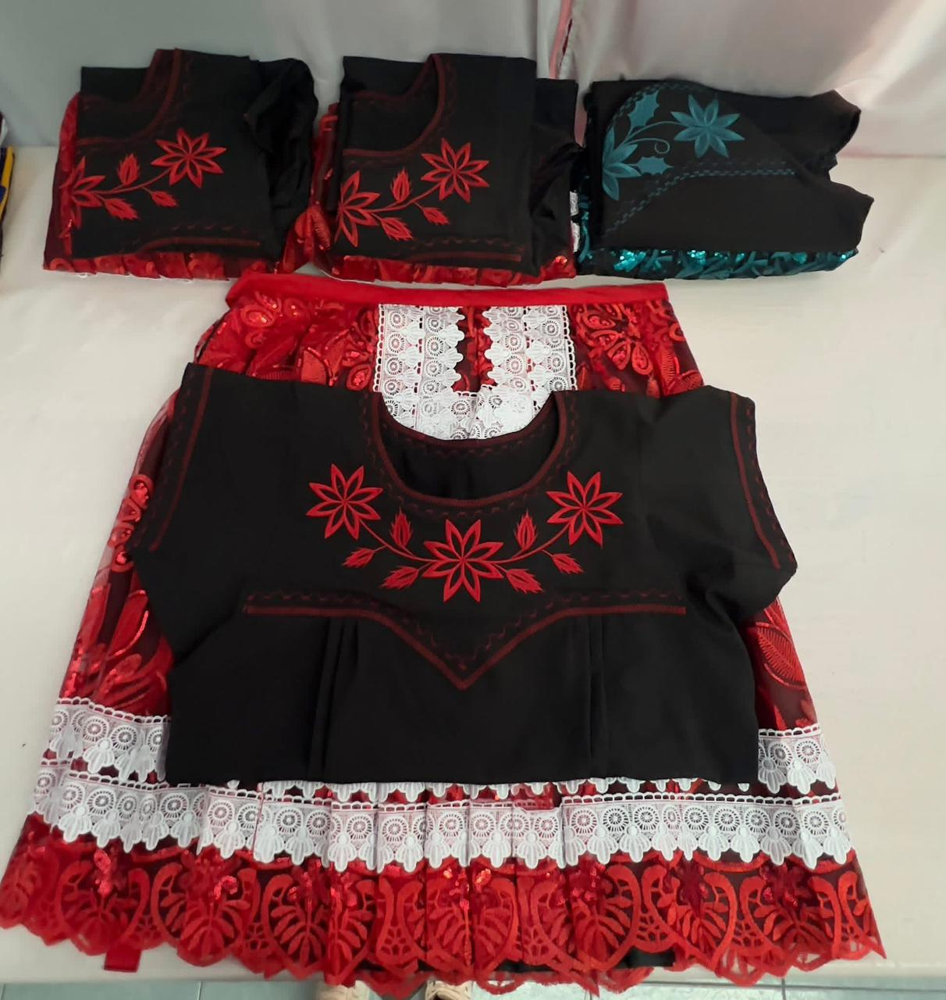
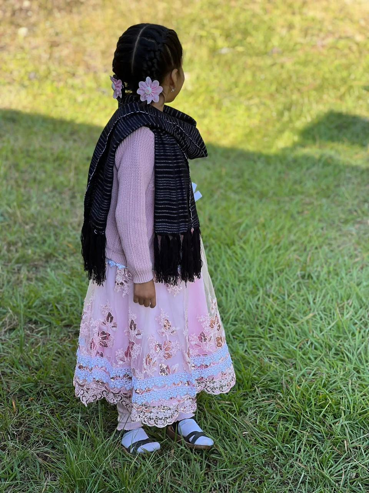
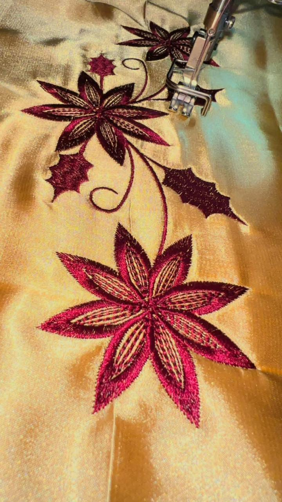
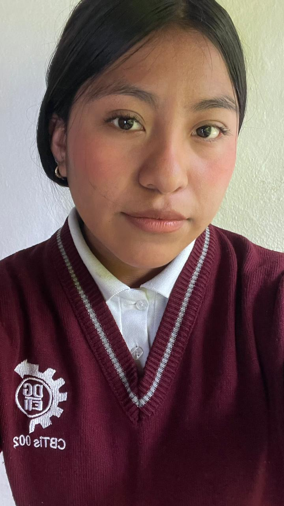

Arte, Identidad y Tradición Textil en Cada Hilo




| Prenda Tradicional | Descripción del Trabajo | Precio Base |
|---|---|---|
| Huipil Tradicional Elegante | Tejido en telar de cintura con hilos finos de algodón y brocados icónicos de la región Mixteca. | $1,200.00 |
| Camisa de Manta Bordada | Manta premium pre-lavada con detallados bordados florales e iconografía local en cuello y mangas. | $500.00 |
| Rebozo de Algodón Fino | Hecho completamente a mano en telar tradicional con acabado de rapacejo anudado. | $600.00 |
| Faja Artesanal Multicolor | Faja resistente con iconografía geométrica ajustable, ideal para complementar el traje regional. | $180.00 |

¡Hola! Cada una de nuestras prendas lleva plasmada la historia y la cultura de San Juan Mixtepec. Si te interesa adquirir alguna pieza a tu medida, cotizar pedidos de mayoreo o conocer más sobre nuestros procesos de tejido, envíame un mensaje directo.
Consultar por WhatsAppOrigen: San Juan Mixtepec, Distrito de Juxtlahuaca, Oaxaca
Horario de encargos: 9:00 AM a 7:00 PM
Punto de entrega: Tlaxiaco / Mercado Central, Oaxaca